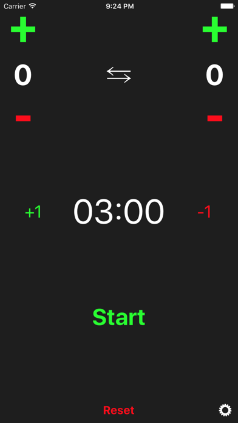

A simple, beautiful fencing score keeping app. It does exactly what you need — keep score and time the bout — without a cluttered interface.
Download on the App Store See featuresFencing Score keeps the focus on the bout, not on the screen.
Track both fencers' touches with large, easy plus and minus controls.
Built-in three-minute bout timer with start and reset, and quick time adjustments.
Switch the fencers' sides with a single tap when you change ends.
Optional sound and vibration feedback, toggled in settings to suit your venue.
The screen won't dim or lock mid-bout, so the score is always in view.
A clean, distraction-free interface built to do one job and do it well.
Score and timer, all on one screen.
